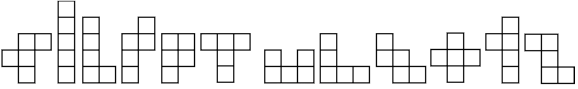

Pentomino Tiling
A pentomino is a polyomino that consists of 5 squares. There are 12 pentomino shapes, if you don't count rotations and reflections. Most pentominoes can form their own mirror image through rotation, but some of them have to be flipped over.
A Pentomino tiling is an example of an exact cover problem and can take on many forms. A traditional tiling presents an 8 by 8 grid, where 4 cells are left uncovered. The other cells are covered by the 12 pentomino shapes, without overlaps, with every shape only used once.
The 4 uncovered cells should be chosen at random. Note that not all configurations are solvable.
(The above text is from the Rosetta Code task I created.)
The animation only shows an occasional snapshot of the backtracking algorithm, otherwise it would take too long.